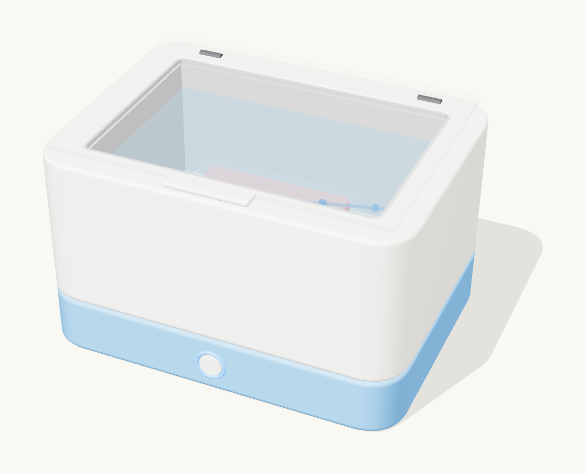
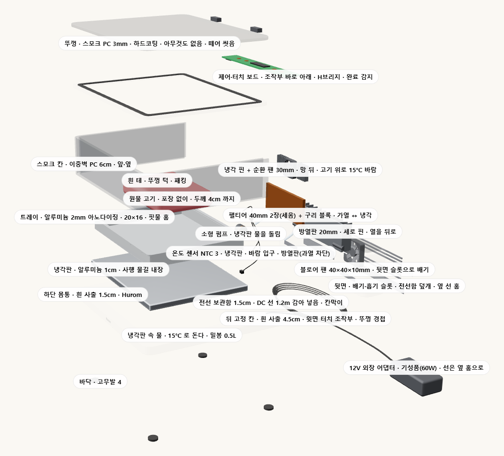

어제 꺼내 놓는 걸 잊은 냉동 삼겹살. 전자레인지는 겉이 익고, 실온은 찜찜합니다.
급속 해동기는 고기를 알루미늄 트레이에 그대로 올리고 뒤쪽 조작부의 「시작」을 한 번 누르면 됩니다. 물은 트레이 아래 밀봉된 냉각판 속에서만 돌고, 사용자는 물을 붓지도 버리지도 않습니다.
서늘고가 「사 온 재료를 지키는」 제품이라면, 급속 해동기는 「얼려 둔 재료를 바로 쓰게 하는」 제품입니다. 둘 다 조리 앞단의 재료 준비 가전이고, 펠티어·팬·12V 어댑터를 같이 씁니다. v1의 「물통에 지퍼백째 담그기」는 버리고, 물이 트레이 바깥에서만 도는 「바닥 냉각판 트레이」로 바꿨습니다.
냉동 고기·생선을 포장 없이 알루미늄 트레이에 올리면, 트레이 아래 밀봉 냉각판 속 물이 15°C 안팎으로 돌고, 뒤 벽의 작은 팬이 같은 온도의 공기를 윗면에 흘립니다. 세균이 자라는 온도(4~60°C)에 표면이 오래 머물지 않게 하면서 얇은 고기는 15~20분, 2cm 두께는 한 시간 안팎에 녹입니다.
냉장 해동은 하루가 걸리고, 전자레인지는 겉이 익고 육즙이 빠지며, 실온·뜨거운 물은 위험합니다. 식약처·USDA가 권하는 「21°C 이하 찬물 해동」은 지퍼백에 옮기고 30분마다 물을 갈아야 해서 아무도 제대로 하지 않습니다. 그 일을 기계가 대신하되, 물과 봉지를 사용자 손에서 없앱니다.
| 위험 | 대응 |
|---|---|
| 「10분」 기대와 실제 시간의 차이 | 두께별 시간을 정직하게 표시(얇은 고기 20~25분, 2cm 60~70분). 1단계 실험으로 숫자를 먼저 잡음 |
| 물에 담그는 v1보다 느림 | 바닥 냉각판 + 위·옆 15°C 바람으로 차이를 1.5배 안팎에 묶음(2cm 60~70분 추정). 대신 봉지·물 없음이 매일의 편함 |
| 날고기 위생 · 핏물 | 트레이 둘레 핏물 홈, 트레이·망은 떼어 식기세척기. 전기부와 고기 사이에 물·전선 없음 |
| 해동판·수비드 쿠커와 비교당함 | 「온도를 재고 바닥·바람으로 안전하게 지키고, 끝나면 10°C 로 보관한다」를 앞세움. 해동판은 한 면·온도 조절 없음, 수비드 쿠커는 찬물 유지가 안 됨 |
냉동실에 고기는 있는데 오늘 저녁에 못 씁니다. 그래서 다시 사거나, 전자레인지에 돌려 겉이 익은 고기를 굽거나, 싱크대에 몇 시간 두고 찜찜해합니다.
가장 안전하지만 전날 꺼내 놓아야 합니다. 오늘 메뉴를 오늘 정할 수 없습니다.
가장자리가 익어 육즙이 빠지고 식감이 바뀝니다. 녹인 뒤 바로 조리해야 합니다.
겉은 20~40°C가 되고 속은 아직 얼음입니다. 세균이 빨리 자라는 4~60°C에 몇 시간 머뭅니다.
트레이 아래 냉각판 속 15°C 물이 바닥을 데우고(얼음 기준) 위·옆은 같은 온도의 바람이 스칩니다. 표면은 21°C를 넘지 않습니다. 계산 추정치이며 1단계 실험으로 확인합니다.
포장을 벗긴 원물이든 랩 포장 그대로든 알루미늄 트레이에 올립니다. 지퍼백에 옮기지 않고, 물을 붓지도 않습니다. 한 번에 고기 1~2팩(600g)까지.
트레이 아래 냉각판 속 물이 돌기 시작하고 펠티어가 15°C 안팎에 맞춥니다. 뒤 벽 속 작은 팬이 뚜껑 아래 공기를 돌려 윗면에도 같은 온도의 바람이 닿습니다. 뒤 조작부의 「15°C」가 켜집니다.
고기가 열을 더 가져가지 않으면(펠티어가 쓰는 힘이 뚝 떨어지면) 완료로 보고 알림음 한 번. 그 뒤에는 냉각판과 바람을 10°C로 내려 최대 2시간 냉장고처럼 지킵니다. 트레이를 들어 헹구면 끝입니다.
흰 하단 1.5cm 위에 이중벽 스모크 칸 6cm, 그 위에 아무것도 없는 스모크 PC 뚜껑. 뒤쪽 4.5cm는 움직이지 않는 부품 칸이고, 그 윗면의 블랙 유리에 터치 아이콘과 「15°C」가 있습니다. 스크롤을 내리면 부품별로 분해됩니다.
방열판 바람은 뒷면 위 슬롯으로 나가고, 아래 슬롯으로 들어옵니다. 뒤 칸 맨 아래 1.5cm는 칸막이로 나눈 전선 보관함 — DC 선 1.2m를 감아 넣고 옆 홈으로 필요한 만큼만 뺍니다. 윗면엔 구멍이 없어 핏물·물이 들어갈 데가 없습니다.
옆면이 투명 칸이라 옆 재킷은 없습니다. 대신 트레이 아래 알루미늄 냉각판(1cm) 속을 15°C 물이 사행으로 돌고(파란 점), 뒤 벽 안쪽 냉각 핀을 지난 같은 온도의 바람이 고기 위·옆을 스칩니다(하늘색). 펠티어 2장의 찬 면이 냉각판 물과 냉각 핀을 같이 식힙니다.
트레이와 뚜껑은 들어서 빼 씻습니다. 온도 센서는 NTC 3개(냉각판·바람 입구·방열판)입니다. 뒤 칸에 펠티어 40mm 2장(세움) → 구리 블록 → 방열판 20mm → 블로어 팬이 한 줄로 서고, 펌프·순환 팬·제어 보드도 같은 칸에 있어 배선이 짧습니다. 어댑터는 바깥 기성품입니다.
준보 님이 「너무 안 예쁘다 → 초음파 세척기 디자인처럼 → 하단은 얇게 → 더 납작하게」로 고르신 끝에 두팔의 U4가 확정됐습니다. 세척기(UC-B01)에서 가져온 것은 모서리를 작게 굴린 반듯한 흰 상자 · 스모크 창 · 블랙 유리 조작부 · 아래 흰 면의 회색 「Hurom」입니다. 아래 두 장이 최종 이미지입니다(구조 3D 모형 렌더 · 대표 앞 45° · 분해도). 예전 시안(하단 3색 · 세로 타워형 · 돔 · 유리 뚜껑 · 스테인리스 트레이)은 모두 뺐습니다.

왜 이 형태인가 — 준보 님의 「원물을 물에 넣을 수 없다 · 너무 크다 · 돔은 별로 · 세척기처럼 · 더 납작하게」를 다 만족하는 형태가 납작한 바닥 냉각판 + 바람뿐이었습니다. 담금식(v1)보다 1.3~1.5배 느린 대신 봉지·물 붓기·물 버리기가 없고, 높이 9cm라 식자재 세척기 옆에 둘 수 있습니다. 옆 재킷·세로 타워형·돔은 모두 뺐습니다.
| 고기 | 두께 | 이 제품 (최종) | 찬물 담금 (v1) | 해동판(한 면) | 냉장 해동 |
|---|---|---|---|---|---|
| 불고기감 · 생선 토막 · 새우 | 약 1cm | 20~25분 | 10~15분 | 30~40분 | 6~8시간 |
| 삼겹살 · 목살 한 팩 | 약 2cm | 60~70분 | 35~45분 | 약 2시간 | 12~18시간 |
| 스테이크 · 덩어리 (최대 4cm) | 약 3cm | 120~140분 | 70~90분 | 3시간 이상 | 24시간 |
계산 가정: 해동에 드는 열 kg당 약 300kJ, 녹은 살의 열전도율 0.5W/m·K. 트레이 바닥 접촉 200~300W/m²·K(알루미늄 2mm + 접촉 저항), 윗면·옆면 바람 20~30W/m²·K. 담금(500W/m²·K, 여섯 면)보다 1.3~1.5배 느립니다.
| 기본 | |
|---|---|
| 제품명 | 휴롬 급속 해동기 (가칭) · 이름 후보: 녹임고 · 스르르 · 해동이 → 미정 |
| 크기 · 무게 | 약 26 × 25 × 9cm (W×D×H, 뒤 부품 칸 4.5cm 포함) · 약 2.0kg (목표, 물 포함) |
| 트레이 | 식품용 알루미늄 3003 2mm 프레스 + 경질 아노다이징(식품 접촉 등급, 열전도 약 190W/m·K) · 안쪽 약 20 × 16 × 2cm · 둘레 1cm 핏물 홈 · 고기 두께 최대 4cm · 들어서 빼고 손 세척 권장(식기세척기 강알칼리 세제는 피막 손상) |
| 냉각판 · 물 | 식품용 알루미늄 1050(순도 99.5%, 열전도 약 220W/m·K, 겉면 아노다이징) 약 21.6 × 17 × 1cm, 속에 사행 물길 물 0.5L · 공장에서 채워 봉함(사용자 보충 없음) · 바닥에만(옆 재킷 없음 — 옆면이 투명 칸) |
| 닿는 부품 모두 식품용 | 고기·물·공기에 닿는 부품은 전부 식품 접촉 등급(준보 「다 식품용」) — 트레이: 알루미늄 3003 + 경질 아노다이징 · 냉각판: 알루미늄 1050 + 아노다이징, 안에 물 밀봉 · 뚜껑: 스모크 PC 또는 트라이탄 2~3mm(BPA-free, 식품 용기 등급) · 안쪽 칸 벽·망: PP 또는 PC, 냉각 핀: 아노다이징 알루미늄 · 뚜껑 패킹: 식품용 실리콘 · 증빙: 원소재 성적서 + 식품위생법 「기구 및 용기·포장」 기준 재질별 용출 시험 성적서(ODM 견적 요청서에 포함) |
| 겉모습 · 색상 | 휴롬 식자재 세척기 UC-B01 계열(U4 확정) — 흰 무광 하단 1.5cm + 「Hurom」 · 이중벽 스모크 PC 칸 6cm(앞·옆) · 흰 테 · 아무것도 없는 스모크 PC(또는 트라이탄) 뚜껑 2~3mm — 바깥 하드코팅 · 안쪽 김 서림 방지 코팅 · 가벼워 들어서 분리 · 뒤 고정 칸 윗면 블랙 유리 조작부. 색은 흰색 + 블랙 유리(서늘고 3색 하단은 쓰지 않음) |
| 해동 | |
| 냉각판 온도 | 15°C 안팎 유지(목표) · 실온 5~30°C에서 시작 · 21°C 초과 시 순환 정지 + 빨강 깜빡임 |
| 안쪽 순환 | 뒤 고정 칸 안쪽 면 30mm 팬 1개 + 냉각 핀 · 떼어 씻는 망 뒤 · 찬 바람을 고기 위로 보내고 아래 망으로 되돌림 · 핀에 맺힌 물은 트레이 홈으로 |
| 해동 시간 | 1cm 20~25분 · 2cm 60~70분 · 3cm 120~140분 (계산 추정, 벤치 실험으로 확정) |
| 완료 감지 | 펠티어가 쓰는 힘 변화 하나로 판정 — 언 고기는 열을 계속 빨아들이다 다 녹으면 뚝 줄어듦 · 두께 모드 없이 자동 · 알고리즘은 1단계 실험 데이터로 만듦 |
| 완료 뒤 | 알림음 1회 · 냉각판·바람을 10°C로 내려 최대 2시간 보관 · 그 뒤 자동 종료 |
| 사용 조건 | 포장 벗긴 원물 또는 랩 포장 그대로 · 뚜껑 닫힘 감지(열리면 팬 정지) |
| 구조 · 전기 | |
| 온도 조절 | 펠티어 소자 2개(TEC1-127 계열) · H브리지로 가열↔냉각 전환 · 구리 열전달 블록(선택)이 냉각판과 냉각 핀에 밀착 |
| 순환 | 소형 자석 구동 펌프 · 밀봉 회로 · 분당 약 1~2L · 물에 닿는 전기부 없음 |
| 센서 | 온도 NTC 3개(아래 줄) · 뚜껑 열림 감지(자석 스위치) · 적외선 센서 없음 |
| 방열 | 뒤 고정 칸 속 방열판 20mm + 블로어 팬 40×40×10mm · 뒷면 아래 슬롯 흡기 → 뒷면 위 슬롯 배기 · 윗면에는 구멍 없음 |
| 전원 | 12V 외장 어댑터 60W(KC 기성품) · 해동 중 평균 약 35W · 보관 중 약 20W |
| 소음 | 35dB 이하 목표 |
| 조작 · 표시 | 뒤 고정 칸 윗면 정전식 터치 5(전원 · 모드 · − · + · 시작은 전원 길게) + 흰색 「15°C」 표시 · 완료 시 알림음 → 10°C 로 낮춰 최대 2시간 보관 · 뚜껑 열림·21°C 초과는 깜빡임 + 「E1」 · 뚜껑에는 전기부 없음 |
| 온도 센서 · 완료 판단 | NTC 3개 — 바닥 냉각판(15°C 유지) · 순환 바람 입구(칸 안 공기, 해동 후 10°C 보관) · 방열판(과열 차단, 안전 필수) · 완료 판단 = 펠티어가 쓰는 힘 변화(언 고기는 열을 계속 빨아들이다 다 녹으면 뚝 줄어듦) · 찌르는 탐침 없음 · 적외선(고기 겉면) 센서는 넣지 않음(준보 확정 2026-11-15) |
| 생산 · 인증 | |
| 새 금형 | 3벌 (하단 몸통 · 뒤 칸 · 흰 테) · 트레이는 알루미늄 프레스 금형 1벌(+아노다이징) · 냉각판은 알루미늄 다이캐스팅 금형 1벌(또는 판금 용접) |
| 공유 부품 | 펠티어 · 팬 · 12V 어댑터 · 제어 보드 뼈대를 서늘고와 공용 |
| 인증 | 어댑터 KC 안전 · 본체 KC 전자파 · 트레이·망·뚜껑 식품 접촉 소재 기준 |
모든 수치는 목표·추정치입니다. 시제품 실측과 ODM 협의로 바로잡습니다.
식약처와 미국 USDA가 권하는 안전한 해동법은 「냉장」 아니면 「찬물에 담가 물을 갈아 가며」입니다. 급속 해동기는 두 번째 방법을 자동으로 지키는 기계입니다.
냉동식품은 냉장 온도나 21°C 이하의 흐르는 물로 해동하라는 기준입니다. 급할 때는 전자레인지 해동도 됩니다. (정책브리핑을 요약한 기사 기준 · 식약처 원문은 확인 중)
찬물 해동은 포장한 채로 물에 담그고, 물이 차갑게 유지되도록 30분마다 갈아 줍니다. 해동이 끝나면 바로 조리합니다. 세균이 빨리 자라는 온도는 약 4~60°C(40~140°F)입니다.
기준이 말하는 핵심은 「표면이 21°C를 넘지 않게, 쉬지 않고 열을 넘겨라」입니다. 펌프가 냉각판 속 물을 계속 돌리고 펠티어가 21°C 아래에 잡아 두면 「30분마다 물 갈기」가 필요 없고, 고기가 물에 닿지 않으니 교차오염 걱정도 없습니다.
기준 조사: 곽두팔 (2026-11-14). 식약처 원문 확인과 「21°C」의 근거 문서는 추가 확인이 필요합니다.
서늘고와 달리 그대로 가져다 쓸 「가정용 해동기 플랫폼」이 시장에 없습니다. 대신 들어가는 부품은 전부 흔한 것들입니다. 펠티어·팬·어댑터는 서늘고와 같은 곳에서, 펌프는 어항·커피머신 펌프 업체에서, 트레이는 알루미늄 프레스·아노다이징 업체에서, 냉각판은 알루미늄 다이캐스팅 업체에서 받아 조합합니다.
| 항목 | 내용 | 추정 | 어디서 |
|---|---|---|---|
| 산업 디자인 | 겉모습·뚜껑·색 확정, 3D 설계 데이터 (서늘고와 한 가족으로) | 800~1,500 | 휴롬 디자인팀 + 외주 디자인 회사 |
| 워킹 목업·시제품 | 3D 프린팅·CNC 목업 2~3대 + 해동 실험용 벤치 | 400~900 | 국내 시제품 업체 |
| 금형 3벌 + 트레이·냉각판 | 하단 몸통·뒤 칸·흰 테 사출 금형 3벌 + 스모크 칸 PC 사출 + 알루미늄 트레이 프레스 1벌 + 알루미늄 냉각판 다이캐스팅 1벌 | 3,500~6,500 | 휴롬 기존 사출 협력사 + 프레스·다이캐스팅 업체 또는 중국 ODM 일괄 |
| 온도·순환 모듈 | 펠티어 2·구리 블록·방열판·팬 2(방열·안쪽 순환)·소형 펌프 | 부품비 외 개발비 적음 | 서늘고 공급처 + 펌프 업체 기성품 |
| 제어 보드·펌웨어 | H브리지 가열↔냉각, 온도 제어, 완료 감지 알고리즘, 안전 정지 | 800~1,500 | 서늘고 보드 뼈대 재사용 + 국내 임베디드 외주 |
| 해동 안전 시험 | 두께별 시간·표면 온도 기록, 미생물 시험(외부 기관) → 표시 문구 근거 | 500~1,000 | 국내 식품 시험 기관 + 사내 실험 |
| 인증·시험 | 본체 KC 전자파, 식품 접촉부 소재 시험 (어댑터는 KC 기성품) | 300~600 | 국내 시험인증기관 |
| 합계 | 약 0.7억~1.3억 | 서늘고와 보드·공급처를 공유하면 아래쪽에 가까움 |
모두 추정치입니다. ODM·부품 업체 3곳 이상 견적을 받아 바로잡습니다.
견적을 받기 전 숫자입니다. 목표 원가·가격 결정은 별도 문서에서 합니다.
업체 정보와 「50% 빨라진다」 같은 판매자 주장은 확인하지 않은 광고 문구입니다. 샘플로 직접 시험해서 숫자를 다시 잡아야 합니다.
개발 기간·금형비는 업계 일반 범위로 잡은 추정입니다.
급속 해동기는 「해동 기계」가 아니라, 냉동실에 쟁여 둔 재료를 오늘 저녁에 쓰게 해 주는 자유를 파는 제품입니다.
| 고객 | 지금 겪는 불편 | 지금 하는 방법 | 급속 해동기가 바꾸는 것 |
|---|---|---|---|
| 맞벌이 · 퇴근 후 요리 | 고기를 못 녹여 메뉴를 바꾸거나 배달 | 전자레인지 해동, 실온 방치 | 씻고 옷 갈아입는 사이에 해동 완료 |
| 대용량 소분 냉동하는 집 | 매일 해동, 매번 찜찜함 | 전날 밤 냉장고로 옮김(자주 잊음) | 잊어도 됨. 필요할 때 한 시간 안 |
| 이유식 · 반려동물 생식 | 소량을 자주 녹이는데 온도가 걱정 | 찬물 그릇에 담가 두고 지켜봄 | 기계가 온도를 재고 다 되면 알림 |
| 휴롬 서늘고 고객 | 재료 준비 가전을 이미 씀 | — | 같은 디자인·같은 어댑터로 나란히 둠 |
위 고객 분석은 가설입니다. 설문과 실험 결과로 바로잡습니다.
서늘고와 같은 순서입니다. 기성 부품으로 벤치를 만들어 「정말 빠른지」와 「표면이 안전한지」를 먼저 재고, 설문으로 「살 사람이 있는지」를 봅니다.
알루미늄 판 아래로 15°C 물을 어항 펌프로 돌리는 「냉각판 모형」 위에 GN 팬 트레이를 올리고, 뒤에서 USB 팬으로 같은 온도의 바람을 보냅니다. 삼겹살 1·2·3cm, 생선 토막으로 중심·표면 온도를 열전대로 기록합니다. 비교군은 담금식·해동판·냉장.
해동 빈도·현재 방법·기다릴 수 있는 시간·물 다루기 수용도. 구매 의향은 가격 없이 「있으면 쓰겠다」로 묻습니다.
아래 기준 4개를 모두 넘으면 디자인·목업·견적(2단계 예산)으로 넘어갑니다.
① 2cm 삼겹살 60분 이내 ② 해동 내내 표면 15°C 이하(윗면 포함) ③ 설문 구매 의향 20% 이상 ④ 펌프·팬 소음 35dB 이하
일정·OEM 문의·안전 기준·디자인 시안·가격은 곽두팔, 페이지·3D·실험 설계는 강명식이 맡습니다. 펀딩 내용은 이 문서에 넣지 않습니다.